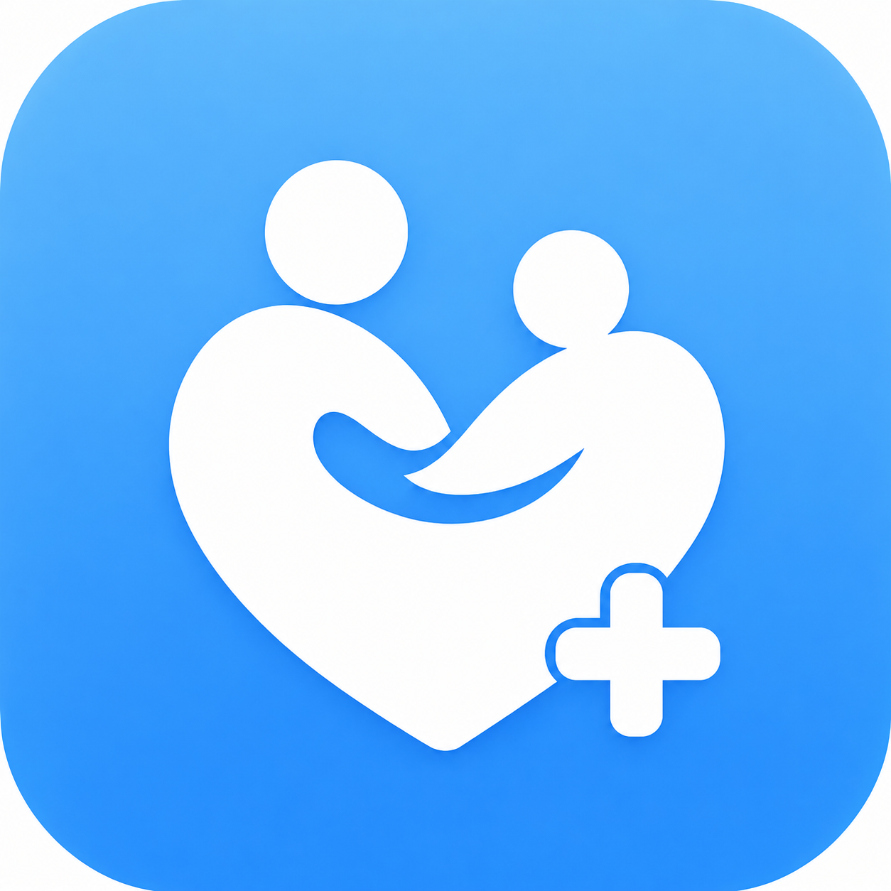
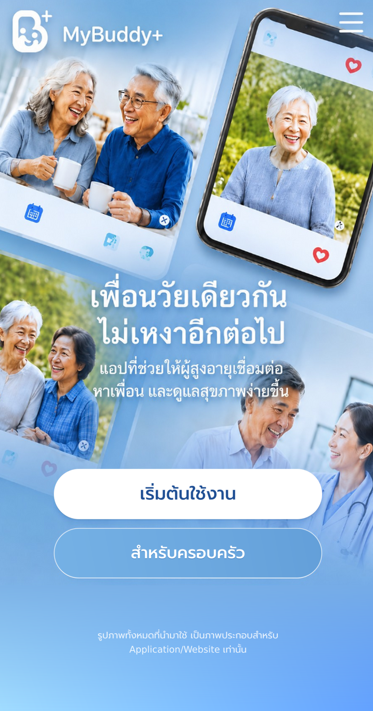
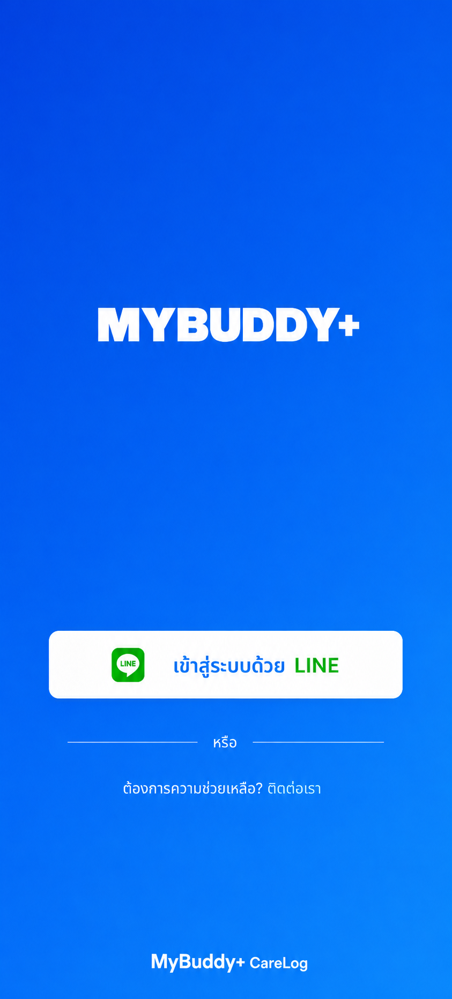

ยืนยันการเข้าสู่ระบบด้วย LINE
อนุญาตให้ MyBuddy+ CareLog ใช้ข้อมูลโปรไฟล์พื้นฐานจาก LINE เพื่อเข้าสู่ระบบและเชื่อมต่อบัญชีของคุณ




อนุญาตให้ MyBuddy+ CareLog ใช้ข้อมูลโปรไฟล์พื้นฐานจาก LINE เพื่อเข้าสู่ระบบและเชื่อมต่อบัญชีของคุณ
เข้าสู่ระบบสำเร็จแล้ว หน้านี้เป็นโครงหลักหลังล็อกอินสำหรับต่อยอดฟังก์ชัน GPS, Buddy, SOS และ CareLog
MyBuddy+ CareLog ถูกออกแบบให้ผู้สูงอายุใช้งานง่าย เชื่อมต่อเพื่อนใหม่ ดูแลสุขภาพ นัดกิจกรรม และให้ครอบครัวอุ่นใจมากขึ้น
ระบบครอบครัวช่วยดูสถานะความปลอดภัย ตำแหน่งล่าสุด นัดหมายสำคัญ และแจ้งเตือนเมื่อเกิดเหตุฉุกเฉิน
เลือกช่องทางที่ต้องการ ระบบนี้เป็นเดโมสำหรับออกแบบ flow และสามารถต่อเข้าระบบจริงภายหลังได้
โทรฉุกเฉิน 1669